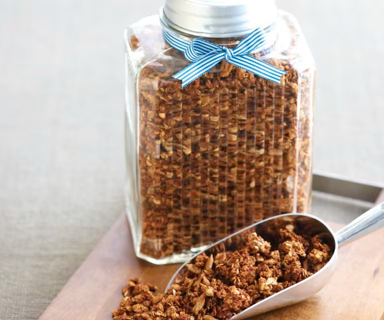

Granola chocolat-amande
Ingredients
×
- 200 g d'amandes
- 400 g de flocons d'avoine
- 150 g de graines de tournesol
- 50 g de graines de sésame
- 50 g de chocolat noir
- 150 g de compote de pommes
- 50 g d'huile de tournesol
- 150 g de vergeoise
- 1 c. à c. de cannelle

Pour 2 bocaux.
Préparation
Étape 1
Préchauffer le four à 160ºC. Tapisser une plaque de papier cuisson.
Étape 2
Mettre 200 g d'amandes dans le bol et hacher grossièrement 2 sec/vitesse 7. Transvaser dans un grand saladier avec 400 g de flocons d'avoine, 150 g de graines de tournesol et 50 g de graines de sésame.
Étape 3
Mettre 50 g de chocolat noir dans le bol et râper 5 sec/vitesse 8.
Étape 4
Ajouter 150 g de compote de pommes, 50 g d'huile de tournesol, 150 g de vergeoise (ou sucre roux) et 1 c. à c. de cannelle, chauffer 3 min/50ºC/vitesse 2. Verser dans le saladier et mélanger.
Étape 5
Étaler sur la plaque et cuire 35 à 40min en bas du four, en mélangeant toutes les 5-10min.
Étape 6
Laisser refroidir sur la plaque puis mettre en bocaux hermétiques.